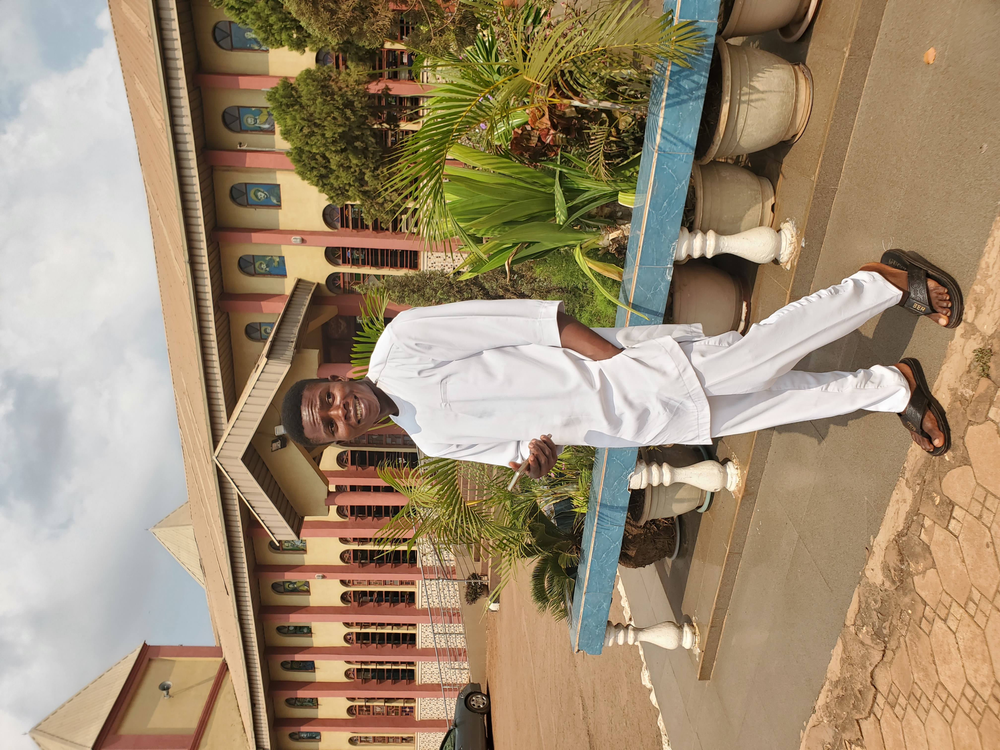

Ugwuanyi Collins Chukwuebuka

Medical student and Aspiring MedTech Innovator
SUMMARY
I am a medical student with a strong interest in tech. My goal is to synergize medicine and tech to create innovative healthcare solutions. I am industrious, able to multi-task and eager to learn. I can work both independently and in a team. I always strive to be the best version of myself.
EDUCATION
- Undergraduate student studying medicine and Surgery, University of Nigeria Enugu Campus.
WORK EXPERIENCE
* Marketing
February - November 2022
- Sold packaging leather and bags on a retail basis
- Sold Jewelries with a relative in a local market
* Tutor- Mastery Academy, My Dreams Academy
May 2023 till date
- Taught Jambites in preparation for their exams at My Dreams Academy.
- Taught and Coached 300 level students in preparation for their 2nd MBBS exams at Mastery Academy.
- Organized,taught and coached different medical students in medical school.
* Building and Construction
August 2022- February 2023
- Served Mason in Costruction and Building sites in the village.
- Served in moulding of building Blocks
* Farming
2022-2023
- Worked as a farmer in different farms in the village on a paid contract.
Skills
- Teaching
- HTML (basic Tech Skills)
- Clinical clerking and history taking
Awards and Certifications
- Best graduating Student - St Teresa's College, Nsukka (2017)
- Certificate of Attendance - Black Python Devs Workshop
Code Your Way, organised by Black Python Devs